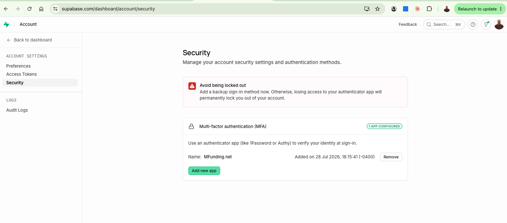

Security Diligence — Supporting Evidence
Agentic Voice, Inc. — d/b/a MFunding.net | Momentum Funding · Prepared July 28, 2026 · Owner: Ernesto Lee, CEO & Security Officer
Per Section 5 of our Information Security Policy (v1.0) and Section 4 of our Access Control Policy (v1.0), multi-factor authentication is required for administrative access to the critical systems that store or process consumer financial data. The evidence below documents the enrolled authenticator-app (TOTP) factor on our primary production data platform.
MFA is enabled on the administrative account via an authenticator app (TOTP). Screenshot of the account security settings showing the configured factor:

Supabase → Account → Security: “Multi-factor authentication (MFA) — 1 APP CONFIGURED”, authenticator app “MFunding.net”, added 28 Jul 2026 18:15 (UTC-4).
Administrative access to the supporting platforms in scope (GitHub — source control; Google Workspace — email/identity) is protected by authenticator-app two-step verification under the same policy requirement.